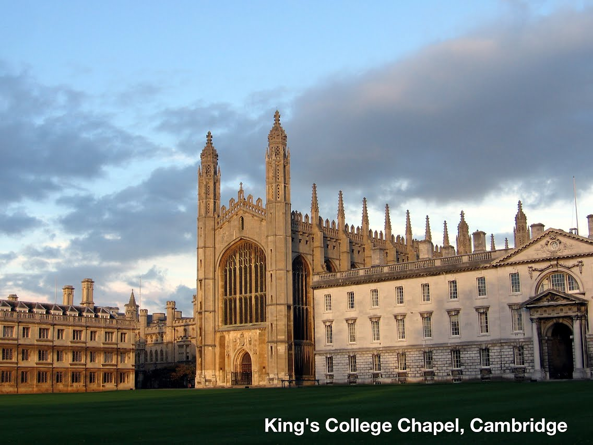

ACM/IEEE Symposium on Architectures for Networking and Communication Systems
ANCS Conf 2021
The 16th ACM/IEEE Symposium on Architectures for Networking and Communication Systems (ANCS '21) will be held December 13-15 online.
Please register to participate: here
ACM/IEEE ANCS is the premier forum for presenting and discussing original research that explores the relationship between the algorithms and architectures of data communication networks and the hardware and software elements from which these networks are built, including both experimental and theoretical analysis. To recognize and foster the increasing importance of research into the co-design of computer and network systems, the conference also places an emphasis on systems issues arising from the interaction of computer and network architectures.